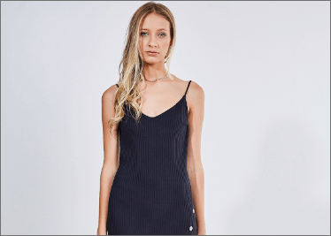
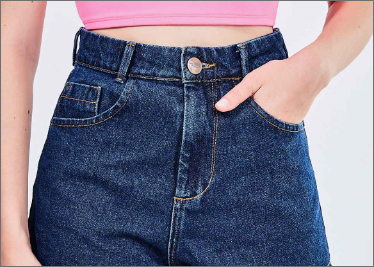

roupas femininas black friday: muito estilo pro job
as peças femininas tão super maravilhosas na black friday de roupas desse ano! vc vai amar nossas opções de blusinhas, vestidos, saias, shorts e vários outros modelos. todos eles estão disponíveis por um precinho especial que só a youcom oferece!
além dos itens pra combinação do rolê e do job, vc também encontra modelos curingas pra todo o tipo de ocasião. quer um exemplo? bora conferir as várias calças jeans na black friday! além delas, nossas camisetas, regatas e tops estão incríveis, garantindo estilo e conforto nos seus looks!
roupas masculinas black friday: várias tendências pro rolê
aqui na black friday de roupas da youcom, vc encontra itens masculinos que não saem dos trends! são diversas alternativas de camisas, camisetas e t-shirts cheias de estilo, cores e estampas divertidas, disponíveis por um preço que cabe no seu bolso!
e, pra criar looks incríveis, cheios de estilo e conforto, confira nossas opções de sobreposições e acessórios em promoção. transformando o visual e agregando mais estilo a eles, essas peças deixam a combinação cheia de personalidade!
looks favoritos da galera
-
t-shirts e blusas black friday
que tal aproveitar a black friday de roupas da youcom pra garantir blusinhas lindas e estilosas? nossas opções variam entre cores lisas e estampadas, além dos modelos transparentes em tule, que agregam aquele toque mais rockinho ao look e fazem vc brilhar em qualquer lugar!
já no caso da t-shirt, essa peça cheia de personalidade entre as roupas masculinas e femininas pode ser encontrada com estampas super divertidas e coloridas. são desenhos que variam entre florais, tropicais, escritas e geométricas super cool! e todas essas possibilidades estão disponíveis em promoção aqui no nosso site!
Confira -
camisetas black friday
uma das queridinhas da moda masculina e feminina é a camiseta! ela combina com todo o tipo de look e ocasião, sendo encontrada em várias cores, com estampa ou não. e é claro que vc garante essa e outras roupas em promoção aqui no nosso site!
as camisetas masculinas da black friday desse ano possuem estilos diferentes, como os modelos alongados, raglan e mais. uma dica é explorar os mix de estampas, já que o tie dye, por exemplo, está em alta! e, pra quem curte um look mais básico, vale conferir as peças em tom neutro.
Confira -
camisas black friday
na black friday de roupas masculinas e femininas, não poderiam faltar as camisas, né? com opções que não saem dos trends, nosso site possui uma grande variedade de itens de manga longa ou curta pra criar looks pra todo o tipo de clima!
vc também pode escolher entre as peças estampadas e de tons lisos. com elas, dá pra inventar looks cheios de personalidade e estilo com itens multicoloridos! além desses modelos, vc ainda encontra aqueles em jeans pra deixar o visual mais moderninho.
Confira -

vestidos black friday
o vestido é um dos sucessos entre as roupas na black friday do nosso site. ele facilita nossa vida na hora de criarmos looks por ser uma peça única, mas que combina super com sobreposições e acessórios.
por ser um curinga no guarda-roupa, vc pode encontrá-lo em vários modelos e comprimentos (curto, midi ou longo). algumas peças também possuem detalhes marcantes, como estampas, babados, barras transpassadas e muito mais! aproveita agora a black friday de roupas da youcom e garanta o seu!
Confira -

shorts baratos
que tal criar looks com um dos queridinhos da black friday de roupas femininas? o short é uma peça super confortável, encontrada em diferentes modelos, tecidos e estilos, além de detalhes como bordados, amarrações e desfiados. com ele, fica fácil montar um visual que combina com a sua personalidade!
vc pode apostar nos modelos bem curtinhos, conhecidos como hot pants, ou nos mais largos, estilo mom, além do estilo básico desse item. e, pra dar mais um toque de personalidade, a dica é optar pelo item clochard ou com faixa estampada na cintura.
Confira -
moletom black friday
o moletom é um tecido super confortável e não poderia estar de fora das roupas na black friday! presente em bermudas, blusões, calças e mais, ele garante sua proteção contra o frio e mais estilo na hora de montar o look!
outra info super cool em relação ao tecido, é que o moletom está presente em diversas peças mais básicas do dia a dia. por isso, seu conforto é garantido vestindo esses itens! e, aqui na black friday de roupas, vc encontra todos eles por condições incríveis.
Confira -
calças com preço especial
a calça é um item super básico, que te enche de estilo sem precisar quebrar a cabeça na hora de criar seus looks. e, na promoção de roupas da black friday da youcom, vc encontra diferentes modelos e em diversos tecidos. aqui vc pode optar pelos de moletom, fit, sarja ou jeans.
vc ainda encontra várias opções, como a calça flare, que começa justinha na cintura e fica mais larga logo abaixo da altura do joelho. outros tipos incríveis são a pantalona e a pantacourt, que dão a sensação de liberdade e conforto no visual. já no caso do jeans, vale apostar nos itens skinny, jogger e mom!
Confira -

bermudas baratas
as bermudas são aliadas na hora de criarmos nossos looks, né? vc pode optar por diferentes tecidos, como moletom, sarja e jeans. e o mais legal é: todos eles possuem detalhes super chamativos! amarrações, rasgos e puídos, além de aplicações super cool fazem a diferença no visual.
outra opção é apostar nos itens estampados, super divertidos e coloridos! as estampas estão presentes nas peças básicas e nas bermudas de banho. que tal aproveitar a black friday de roupas da youcom pra garantir a sua?
Confira
diquinhas pra aproveitar a black friday da youcom
pra ter ótimas compras e uma experiência incrível nessa black friday, fique de olho nas dicas da youcom! lembre-se de que é preciso finalizar a compra após adicionar os itens no carrinho. isso porque ela só se torna efetuada depois do pagamento e da informação do endereço de entrega. confira outras infos que preparamos pra vc!
como saber se escolho PP, P, M, G ou GG?
não há nada melhor que encontrar uma peça linda que fica com um caimento incrível em vc, né? pra isso, é importante que vc acerte o tamanho dos itens ao criar seus looks com a tão sonhada roupa!
pra isso, é muito importante que vc tire suas medidas. pra saber o tamanho da sua cintura, posicione uma fita métrica acima do umbigo e dê a volta por seu corpo. já no caso do quadril, junte os pés e posicione-a na altura mais larga do quadril. faça o mesmo na região do busto pra saber qual é o melhor tamanho pra vc.
como saber quais produtos estão na promoção?
os produtos em promoção da youcom só são divulgados no dia por serem selecionados especialmente pra essa data do ano. por isso, essas peças incríveis ficam disponíveis em um valor super especial!
quais são as formas de pagamento?
quer se preparar em relação às formas de pagamento da black friday da youcom? a gente te conta! vc pode efetuar o pagamento das suas comprinhas com cartões de crédito das bandeiras Visa, MasterCard, American Express, Elo, Diners Club International e Hipercard.
trocas e devoluções
seu pedido chegou em casa, mas não possui o tamanho certo? relaxa! nós te ajudamos a resolver esse problema. casos como esse acontecem e queremos muito que vc aproveite suas peças pra criar looks incríveis pro dia a dia!
confira, na nossa página de autoatendimento, a melhor forma de trocar ou devolver seus itens. e não se preocupe! o envio das peças é de graça! então, vc logo estará vestindo seu item incrível.
agora que vc já tá por dentro de como será a nossa black friday de roupas, aproveita nossos preços especiais e renove seu guarda-roupa! afinal, só aqui na youcom vc encontra itens super cool pra completar o look do dia a dia!